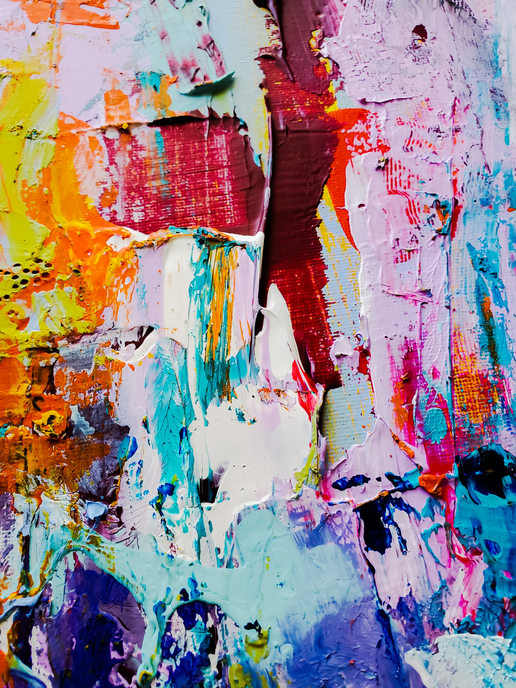
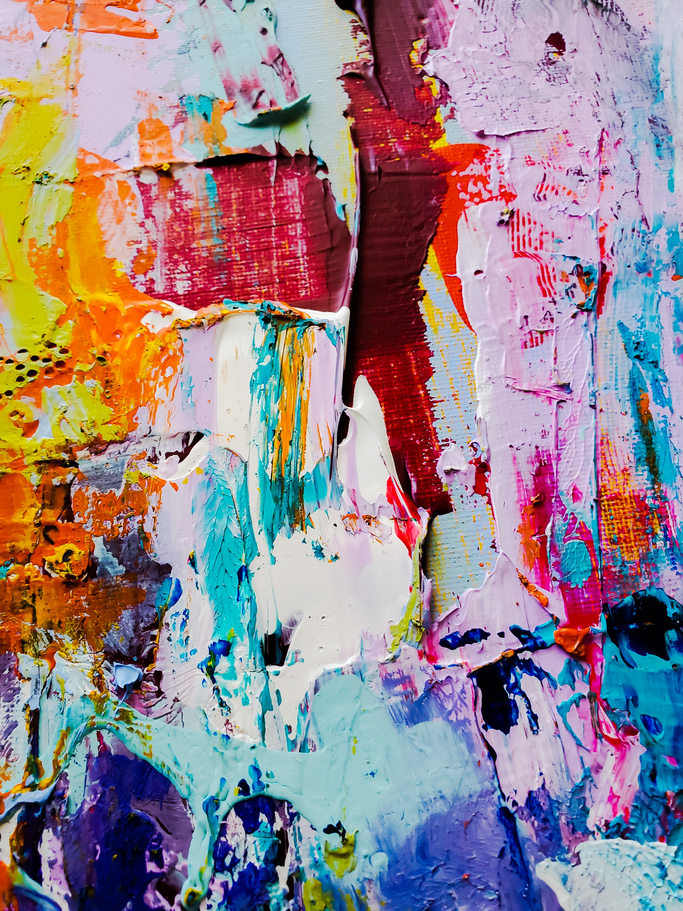

Travelers Gallery Images
 mix mix |
Splash |
 Flowers Flowers |
 galaxy galaxy |
 painter painter |
 brush brush |

| mix |
Splash |
| Flowers |
galaxy |
| painter |
brush |
Oil painting is such a fun way to experiment with blending, glazing and scumbling. Your painting can dry faster or slower depending on the paint thinners and additional oil used. Oil painting is considered higher in the art world compared to acrylic paintings and was used by many successful artists. Oil paint is made up of ground pigment suspended in drying oil.
Read More...
The world of abstract art was birthed in the 19th century. It's art that takes on shape, color, lines and texture. Abstract is an art form that makes you tap into the imagination and try to bring out something that can't be regularly seen.
Read More...
Contact us if you have any questions about our business and events. Our email is TravelersGallery@gmail.com and our business number is 423-999-872.
Read More...